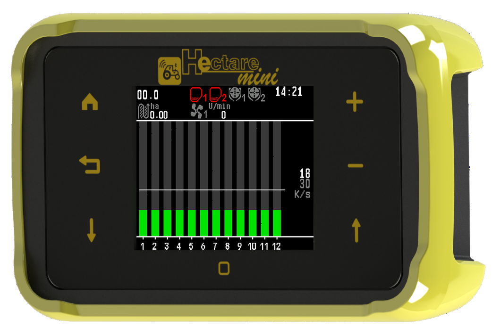

Hectare-Monitore
Hectare Mini
Kompakter Aussaatmonitor für Drillmaschinen und Einzelkornsägeräte
Was das System Hectare Mini leistet → Gesamte Anleitung auf einer Seite

Erste Schritte
- Was das System Hectare Mini leistetDas Aussaat-Kontrollsystem mit dem Panel Hectare Mini auf einer Seite — was es überwacht, was es antreibt, was es aufzeichnet und an wen Sie sich wenden.
- Das Panel und seine sieben TastenWoraus das Panel Hectare Mini besteht, wie es befestigt wird und was jede der sieben Tasten bei kurzem und langem Druck bewirkt.
- Ein- und AusschaltenWas der Hectare Mini nach dem Einschalten zeigt, mit welchem Bildschirm und welcher Zugriffsstufe er startet und wann Sie gefahrlos ausschalten können.
- Bildschirme, Menüs, Kontextmenüs und FensterDas, worüber am Hectare Mini alles läuft — die Arbeitsbildschirme, die Menüs, das Kontextmenü eines Geräts, die fragenden und meldenden Fenster und die Zugriffsstufen.
- Der ZiffernblockWie Sie am Hectare Mini eine Zahl eingeben — was das Fenster zeigt, welche Tasten wirken und die Fallen des leeren Feldes und der Werte außerhalb des Bereichs.
- Kurzanleitung — vor und während der ersten FahrtWas Sie prüfen, bevor Sie mit dem Hectare Mini aufs Feld fahren, wie das Panel von selbst zu überwachen beginnt und worauf Sie während der ersten Fahrt achten.
- Inbetriebnahme — ein neues System einrichtenIn welcher Reihenfolge ein neues System Hectare Mini an einer Maschine eingerichtet wird — vom Anschließen der Geräte bis zu den Kalibrierungen — mit einem Link zu den Einzelheiten jedes Schritts.
- Zu dieser Anleitung und ihren BildernWie Sie diese Anleitung lesen — Signalwörter, Zugriffsstufen, Tastendrücke — und was auf den Bildern zum Prüfstand und nicht zu Ihrer Maschine gehört.
Die Bildschirme
- Der StartbildschirmWas jeder Teil des Startbildschirms am Hectare Mini ist — Geschwindigkeit, Anzeigen, Fläche, Aussaatdichte, die Diagramme und Mengenfelder — und was Sie von hier aus tun können.
- Anzeigen des Startbildschirms und ihre ZuständeJede Anzeige des Startbildschirms am Hectare Mini in jedem Zustand — Geschwindigkeit, Behälter, Dosierwelle, Gebläse, Druck, Motorsensoren, Gerätestellung, Spuranzeiger, Fahrgasse, Uhr, Fläche, Aussaatdichte und Produktmengen.
- Das Sektionsdiagramm — Säulen, Linien und FarbenWie Sie die Saat- und Düngerdiagramme des Hectare Mini in den Modi „Durchfluss“, „Hybrid“ und „Einzelkorn“ lesen und was „NICHT ÜBERWACHT“ bedeutet.
- GPS-Empfang und der Informationsbildschirm GPSWie der Hectare Mini die Fahrgeschwindigkeit aus seinem eingebauten GPS-Empfänger nimmt, was die Farbe des Satellitensymbols bedeutet und wie Sie den Informationsbildschirm GPS lesen.
- Der Bildschirm SaattabelleDie Messwerte jeder Saatreihe als Zahlen, eine Zeile je Reihe — welche Tabellen Ihre Maschine hat, was jede Spalte und Farbe bedeutet und wie Sie die Werte zurücksetzen.
- Der Bildschirm StatistikDer Bericht über die Arbeit auf jedem Feld, Block für Block — und das Menü, das das aktive Feld wählt, die Wegstrecke über die gesamte Lebensdauer zeigt und ein Feld löscht.
- Der Bildschirm SollmengenDer Bildschirm für Maschinen, die Produkte mit einer Sollmenge ausbringen — was er zeigt, seine drei Zustände, seine Farben und wie Sie von hier zu den Motoren und ihrer Kalibrierung gelangen.
- Der Bildschirm MotorenEine Kachel je Dosiermotor und ein Symbol je Fahrgassen-Aktuator — wie Sie zum Bildschirm gelangen, die Farben lesen, einen Motor aus der Überwachung nehmen und seine Einstellungen öffnen.
So geht's
- Sollmenge oder Alarmschwelle ändernDie Alarmschwelle, die Sollmenge in Körnern je Meter oder die Produktmenge in kg/ha anheben oder absenken — auf dem Startbildschirm oder dem Bildschirm Sollmengen.
- Alarmschwelle einer Drillmaschine einstellenLassen Sie den Hectare Mini die Alarmschwelle mit einem langen Druck aus dem ausgebrachten Fluss setzen — oder stellen Sie sie von Hand ein —, damit eine Reihe, die Fluss verliert, gemeldet wird.
- Produktausbringung von Hand sperrenHalten Sie die Dosiermotoren und die Flüssigdüngerpumpe mit einem langen Druck an, damit sich nichts dreht, während Sie an der Maschine arbeiten — und wie das Panel die Sperre anzeigt.
- Sensor in die Überwachung nehmen oder aus ihr nehmenSchalten Sie die Überwachung eines einzelnen Sensors, Motors oder Aktuators im Sensoreinstellmodus aus und ein — was das Panel fragt und wann es verlangt, die Statistik zu löschen.
- Werte der Saattabelle zurücksetzenSetzen Sie die Zähler und Intervallwerte der Saattabelle auf null — was zurückgesetzt wird, was nicht und was sie sonst noch zurücksetzt.
- Die Arbeit auf einem neuen Feld beginnenWählen Sie das Feld, in das das Panel seine Statistik schreibt, und löschen Sie es, wenn es nicht leer ist — vor der ersten Fahrt auf einem neuen Feld.
- Scheiben mit Korn füllenDrehen Sie die Säscheiben eines Einzelkornsägeräts mit Dosiermotoren, bis jede Scheibe Korn hält, damit die Aussaat vom ersten Meter an beginnt — wie Sie den Vorgang starten und das Ergebnis lesen.
- Einem Dosiermotor ein Produkt zuweisenSagen Sie dem Panel, welches seiner drei Produkte jeder Dosiermotor ausbringt, damit eine Sollmenge in kg/ha für alle Motoren dieses Produkts gilt.
- Einen Dosiermotor nach Masse kalibrierenSagen Sie dem Panel, wie viel Produkt ein motorgetriebener Dosierer je Wellenumdrehung liefert — was Sie brauchen, die Schritte auf dem Bildschirm und was die Fehlermeldungen bedeuten.
- Den Fahrgassenrhythmus einstellenSagen Sie dem Hectare Mini, bei welchen Durchgängen welcher Aktuator oder Motor abschaltet — die Grenzen, der Rhythmus-Editor, seine Dialoge und die Reihenfolge, die verhindert, dass Ihr Rhythmus überschrieben wird.
- Fahrgasse auf dem Feld — Durchgangsanzeige und nächster DurchgangLesen Sie die Fahrgassenanzeige, wechseln Sie von Hand zum nächsten Durchgang oder lassen Sie das Panel es anhand der Spuranzeiger oder der Gerätestellung tun, und erkennen Sie eine für die Fahrgasse abgeschaltete Reihe.
Einrichten
- ZugriffsebenenDie drei Zugriffsebenen des Hectare Mini – Fahrer, Agronom, Service –, was jede freigibt, was auf den höheren Ebenen mit den Alarmen geschieht und wie Sie zur Ebene Fahrer zurückkehren.
- Agronomen-Ebene aktivierenDie Schritte, jeweils mit dem zugehörigen Bildschirm, um die Zugriffsebene des Hectare Mini vor dem Ändern von Einstellungen auf „Agronom“ oder „Service“ anzuheben und danach auf „Fahrer“ zurückzukehren.
- Profil und Verbindungen prüfenDie erste Prüfung nach dem Einbau eines Hectare Mini – stimmt das Profil mit der Maschine überein, antwortet jedes Gerät, wird jeder Sensor überwacht – als Ablauf mit dem, was der Bildschirm bei jedem Schritt zeigt.
- System nach dem Einbau prüfenDie Prüfungen, die Sie nach der Montage eines Hectare Mini einmal durchführen – jeder Kornsensor in seiner eigenen Reihe, Zählung, Arbeitsstellung, Geschwindigkeit und die übrigen Sensoren – mit dem, was der Bildschirm bei jedem Schritt zeigen muss, und wohin Sie gehen, wenn er es nicht tut.
- Das ProfilWas das Profil des Hectare Mini ist, jeder Punkt des Profilmenüs mit seinen Werten und die Regeln, die ein Profil einhalten muss, bevor das Panel es annimmt.
- Profil einrichtenDie Schritte, um das Profil des Hectare Mini zu ändern – das Profilmenü auf der Ebene Service erreichen, die Geräte der Maschine eintragen, speichern und das Panel neu starten lassen.
- Das Menü EinstellungenJeder Punkt des Menüs „Einstell.“ des Hectare Mini – Ton, Sprache, Diagrammeinstellungen, Datum und Uhrzeit, Alarmverzögerung, Mengenfehler, Maschinenparameter, Benutzer – mit Zugriffsebene, Bereich und Werkseinstellung.
- Datum und Uhrzeit einstellenStellen Sie die Uhr des Hectare Mini von Hand ein, oder lassen Sie sie mit einer Zeitzone dem GPS-Empfänger folgen.
- Sämaschinen-ParameterDas Untermenü mit Arbeitsbreite und Überwachungsmodi des Hectare Mini, was eine Änderung mit der Statistik macht und wo die beiden Kalibrierungen im Menü starten.
- SensoreinstellungenWie Sie die Einstellungen eines einzelnen Sensors des Hectare Mini erreichen, was jedes Kontextmenü enthält, welche Einstellungen für eine ganze Gruppe gelten und welche Kalibrierungen es gibt.
- Der Sensor-StatusbildschirmWie Sie den Statusbildschirm eines Sensors des Hectare Mini lesen – Typ, Gerät, Verbindung, Livewerte und aktive Alarme – und was jede Sensorart darauf zeigt.
- FahrgeschwindigkeitssensorAlle Parameter des Fahrgeschwindigkeitssensors des Hectare Mini – Impulse, Zählperiode, Raddurchmesser, Faktor, Aussaatkriterium, Geschwindigkeitsgrenzen, Simulation – mit Bereich und Werkseinstellung.
- Geschwindigkeitssensor kalibrierenFahren Sie 100 m markierte Strecke, damit der Hectare Mini den Faktor des Fahrgeschwindigkeitssensors korrigiert – gestartet in den Sämaschinen-Parametern oder im Kontextmenü des Sensors.
- Korn- und DüngersensorenDie Einstellungen der Kornsensoren und der Düngersensoren des Hectare Mini – Fraktion je Kultur, Korrektur, Fehlergrenzen, Neuberechnungsweg, Anteil säend – und wann das Panel die Aussaat zu überwachen beginnt.
- Neuberechnungsweg vom Panel berechnen lassenLassen Sie den Hectare Mini den besten Wert für „Neuberechn.,m“ für Fehlstellen und Doppelablagen aus der Sollmenge und den Löchern der Scheibe berechnen – mit oder ohne Dosierermotoren.
- DosierwellensensorDie Einstellungen eines Dosierwellensensors des Hectare Mini – die Periode für „Kein Lauf“, die Überwachung der Wellendrehzahl gegen die Fahrgeschwindigkeit und die Überwachung des Produktgewichts – mit Bereichen und Werkseinstellungen.
- Dosierer-Drehung kalibrierenDrehen Sie das Antriebsrad, damit der Hectare Mini lernt, wie viele Dosierer-Impulse zu wie vielen Rad-Impulsen gehören – nötig, bevor die „Drehzahlüberwachung“ die Wellendrehzahl überwachen kann.
- Dosierer nach Gewicht kalibrierenLassen Sie den Dosierer in einen Behälter laufen und wiegen Sie ihn, damit der Hectare Mini weiß, wie viel Produkt eine Wellenumdrehung ausbringt – nötig für die „Massenüberw.“.
- GebläsesensorDie Einstellungen eines Gebläsedrehzahlsensors des Hectare Mini – minimale und maximale Gebläsedrehzahl und Impulse je Umdrehung – und wann das Panel seine Alarme auslöst.
- DrucksensorDie Einstellungen eines Drucksensors (Unterdruck) des Hectare Mini – Filter, minimaler und maximaler Druck – und wann das Panel seine Alarme auslöst.
- Behälter- und ArbeitsstellungssensorenDer Behälterfüllstandsensor des Hectare Mini, der keine Einstellungen hat, und der Arbeitsstellungssensor mit seinem Transportsignal und seinem Alarmkriterium.
- Motorsensoren des GebläseantriebsDie fünf Sensoren eines separaten Gebläsemotors am Hectare Mini – Zündung, Öldruck-Störung, Batterieladung, Kraftstoffmangel, Luftfilter –, ihre zwei Einstellungen und wie der Zündungssensor die übrigen freigibt.
- Spuranzeiger-SensorenDie zwei Einstellungen der Sensoren an den Spuranzeigerarmen des Hectare Mini – welchen Arm ein einzelner Sensor überwacht und welches Signal bedeutet, dass der Arm unten ist.
- GerätekonfigurationWofür die Gerätekonfiguration am Hectare Mini dient und wie Sie sie vorbereiten – nur das eine Gerät am Kabelbaum, die Ebene Agronom, das Menü Sensorkonfiguration.
- Kornsensor konfigurierenGeben Sie einem neuen oder ersetzten Kornsensor des Hectare Mini die Nummer seiner Reihe – wie Sie einen offenen Sensor halten, die drei Menüpunkte und die Kontrolle danach.
- Drucksensor konfigurierenGeben Sie einem neuen oder ersetzten Drucksensor des Hectare Mini seine Adresse – die drei Menüpunkte und die Kontrolle danach.
- HUB-8-Verteiler konfigurierenStellen Sie die acht Kanäle eines HUB-8-Verteilers am Hectare Mini ein – wofür jeder Kanal steht und die Kurzbefehle, die alle Kanäle auf einmal füllen.
Alarme und Fehlersuche
- So arbeiten die AlarmeWann der Hectare Mini einen Alarm auslöst, was das Alarmfenster zeigt, wie Sie es schließen, welche Meldungen keine Alarmfenster sind und wie die Alarmthemen dieser Anleitung geordnet sind.
- Gerät antwortet nicht: Verbindung weg, Falscher Gerätetyp!Die zwei Alarme, die jeder Sensor, Motor oder Aktuator des Hectare Mini auslösen kann – keine Antwort vom Gerät oder Antwort der falschen Geräteart – und was zu prüfen ist.
- Fahrgeschwindigkeit: LANGSAMER, SCHNELLER und Alarme des GeschwindigkeitssensorsWas zu tun ist, wenn der Hectare Mini LANGSAMER oder SCHNELLER zeigt, wenn ein Geschwindigkeitssensor ausfällt oder wenn sich die Geschwindigkeitsgrenzen nicht einhalten lassen.
- Aussaatalarme: Menge, Fehlstellen, Doppelablagen, NICHT ÜBERWACHTWas zu tun ist, wenn eine Saat- oder Düngerleitung des Hectare Mini zu wenig oder zu viel sät, zu viele Fehlstellen oder Doppelablagen hat, in eine Fahrgasse sät – oder wenn das Panel gar nicht überwacht.
- Zustand des Kornsensors: Verstopft, Fremdlicht, DefektWas zu tun ist, wenn ein Korn- oder Düngersensor des Hectare Mini meldet, dass sein optischer Kanal blockiert ist, dass ihn Sonnenlicht blendet oder dass er ausgefallen ist.
- Gebläse und Dosierwelle: DrehzahlalarmeWas zu tun ist, wenn das Gebläse oder eine Dosierwelle des Hectare Mini zu langsam, zu schnell oder gar nicht dreht.
- Behälter leerWas zu tun ist, wenn der Hectare Mini meldet, dass ein Behälter leer ist.
- Druckalarme: Druck hoch, Druck nied.Was zu tun ist, wenn der von einem Drucksensor des Hectare Mini gemessene Unterdruck zu hoch oder zu niedrig ist.
- Motoralarme: Öldruck, Batterieladung, Kraftstoff, LuftfilterWas zu tun ist, wenn ein Sensor des separaten Gebläsemotors des Hectare Mini niedrigen Öldruck, fehlende Batterieladung, wenig Kraftstoff oder einen verschmutzten Luftfilter meldet.
- Dosierung nach Gewicht: Produktmenge zu niedrig oder zu hochWas zu tun ist, wenn der Hectare Mini meldet, dass ein nach Gewicht dosiertes Produkt unter oder über seiner Sollmenge ausgebracht wird oder gar nicht dosiert werden kann.
- Benutzer ist Agronom! Alarme nicht sichtbar!Das eine Fenster, das der Hectare Mini auf der Ebene Agronom oder Service beim Beginn der Aussaat noch zeigt – was es bedeutet und wie Sie die Alarme zurückbekommen.
- Fahrgassenalarme: Undef.Zustand, BlockiertWas zu tun ist, wenn ein Fahrgassen-Aktuator des Hectare Mini beide Endlagen zugleich meldet, seine Stellung nicht erreicht oder wenn Saatgut durch eine für die Fahrgasse abgeschaltete Leitung läuft.
- Alarme der DosierermotorenWas die Alarme eines elektrischen Dosierermotors des Hectare Mini bedeuten – Spannung, Temperatur, Kurzschluss, Strom, Blockieren – und was zu prüfen ist.
Nachschlagen
- Das Kontextmenü eines DosiermotorsJeder Punkt des Kontextmenüs eines elektrischen Dosiermotors — was er einstellt, ab welcher Zugriffsstufe er sichtbar ist und was „Standardwerte“ wirklich zurücksetzt.
- Tasten auf jedem BildschirmWas jede der sieben Tasten bei kurzem und langem Druck bewirkt — und wo der Bildschirm Berührungen annimmt — auf dem Startbildschirm, in Menüs, in Fenstern und auf jedem Arbeitsbildschirm.
- Begriffe in dieser AnleitungDie Wörter der Anleitung zum Hectare Mini an einer Stelle — von Aktives Feld und Alarmschwelle bis Vereinzelung, Kornabstand und Fahrgassenrhythmus.
- Bevor Sie den Support kontaktierenWas Sie prüfen, aufschreiben und fotografieren sollten, bevor Sie für einen Hectare Mini um Hilfe bitten – und wen Sie zuerst fragen.